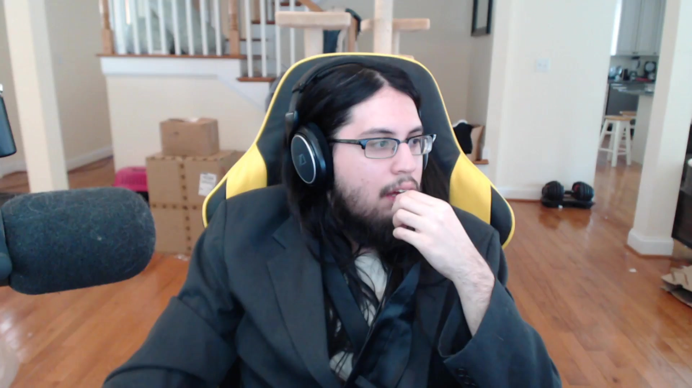

Michael Santana was born in Margate, Florida on February 21, 1992 currently making him 26 years old. He began his career as a mid laner during the preseason of season 1 and switched to ADC when people began to use the Top>Jungle>Mid>ADC>Sup format. He was the ADC for the team "Oh God Bears". He also played for team "Rock Solid" and "Team Dignitas" up until October of 2014, where he stepped down as a pro player and began to pursue his career as a Twitch.tv Streamer.
According to Socialblade.com Imaqtpie is the streamer with the 9th most follwers and 8th most channel views. Not only does he have a lot of people tuning in to his streams, he's also pulling in a large amount of money as well. According to Rolling Stone "this huge collective audience generates $2 million a year in earnings for him, and that's before you factor in any sponsorship money." The Key to his success? His personality
You load onto a QTpie stream, you see his familiar white T-shirt and shorts getup and his living room, every once in a while you see his two cats "SmallCat", "MellowCat", and his one dog "DapperDog" and his fiancé, Lisha Wei; You start to feel a part of the Santana family. There's the incentive to watch the stream but where's the incentive to donate and subscribe? A big part may be the fun club he's created himself called the "Big Dick Club". Who wouldn't want to join such a prestigious gathering? Subscribers also get to use the many emotes that one can only use when subscribed to him. Here's a list of the emotes you can use. Another perk of his is the text to speech bot that speaks the text that is entered in a donation if the donator donates more than $4.20 (changes based on streamer's discretion). This lets the donator feel like he's actually talking with Mr. Santana.
You can follow Mr. Santana at Twitch.tv/imaqtpie. I should warn you, he sometimes uses vulgar language.
